Betty rentre du laboratoire et demande immédiatement à voir sa fille.
— Hale, où est Anna ?
— Elle est en sécurité, Madame. Toujours avec votre sœur, à l’hacienda Awake.
Betty s’arrête.
— Elles sont encore là-bas ?
— Oui.
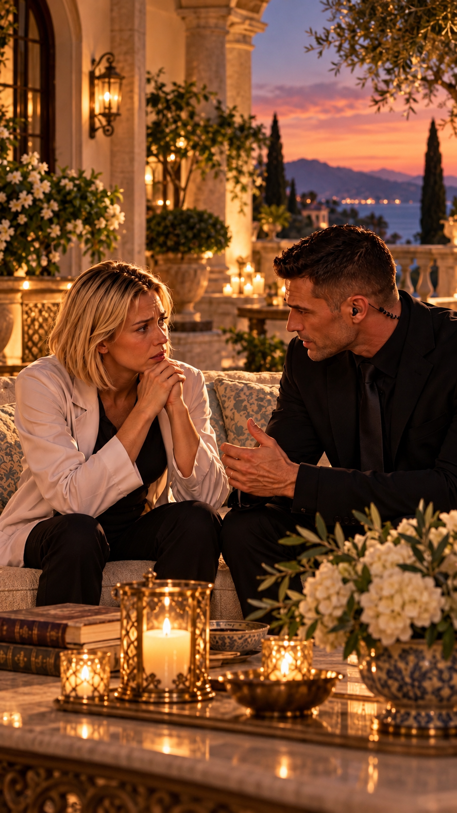
— Et comment pouvez-vous être certain qu’elles vont bien ?
Hale reste parfaitement calme.
— Parce que je le sais.
Cette réponse n’a rien de rassurant pour Betty.
Quelques minutes plus tard, elle monte dans son Range Rover et prend immédiatement la direction de l’hacienda Awake.
À son arrivée, Betty est immédiatement frappée par le niveau de sécurité de la propriété.
Des drones apparaissent presque silencieusement autour de son véhicule.
Ils l’analysent.
— Betty Flores. Généticienne et biologiste. Accès en cours de validation.
Betty fronce les sourcils.
— Charmant…
Quelques instants plus tard :
— Autorisation accordée. Bienvenue à l’hacienda Awake.
Lorsqu’elle arrive devant l’entrée principale, James l’attend déjà.
— Bonjour, Mme Flores.
— Bonjour.
— Votre fille, Mme Adverse, Mme Tempass et Mme Awake vous attendent près de la piscine.
Il lui indique le chemin.
— Si vous voulez bien me suivre.
Betty le regarde brièvement.
— Vous saviez que j’arrivais ?
James esquisse un sourire.
— Ici, nous savons généralement qui entre avant même qu’il ne franchisse le portail.
Lorsqu’elle approche de la piscine, elle découvre les quatre femmes installées ensemble.
Anna.
Lucy.
Root.
Hope.
Elles sourient. Elles plaisantent.
Une étrange complicité semble déjà s’être installée entre elles.
Betty s’arrête quelques secondes.
Elle n’a pas vu Lucy aussi détendue depuis longtemps.
Et Anna semble rayonnante.
— Man ! Viens !
Anna s’approche.
— Je te présente officiellement Hope.
Puis elle désigne Root.
— Et Root, mais apparemment vous vous connaissez déjà.
Betty regarde l’archéologue.
— Root…
Un sourire sincère apparaît enfin sur son visage.
— Ça fait une éternité.
— Beaucoup trop longtemps.
— Et tu n’as pratiquement pas changé.
Root sourit.
— Toi non plus.
Hope s’approche à son tour.
— Bonjour, Betty. Et bienvenue.
Betty la remercie pour ce qu’elle a fait pour Anna.
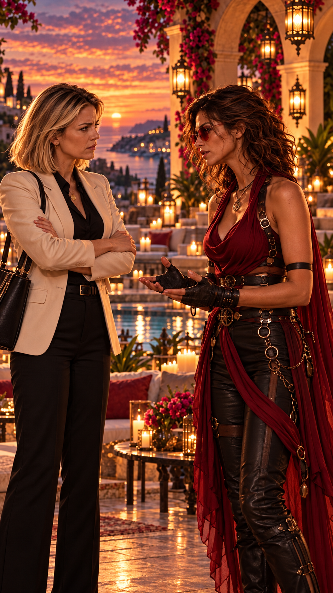
Mais lorsqu’elle annonce qu’il est temps de rentrer, Anna et Lucy répondent presque en même temps :
— Assieds-toi.
Hope intervient calmement.
— Nous avons seulement posé une règle.
— Laquelle ?
— Aucun mensonge.
Personne n’est obligé de répondre à une question.
Mais si l’une de nous décide de répondre, alors elle dit la vérité.
Et ce qui est confié ici reste ici.
Betty finit par s’asseoir.
Anna intervient :
— Hope est la sœur du propriétaire du restaurant français qui a brûlé.
Betty se tourne brusquement vers elle.
Puis vers Hope.
— Ted Awake était votre frère ?
— Oui.
Le visage de Betty change.
— Je suis sincèrement désolée.
Anna et moi avons eu l’occasion de déjeuner dans son restaurant peu avant l’incendie.
Hope semble touchée.
— Alors vous avez connu une petite partie de son rêve.
Hope regarde un instant l’hacienda.
— Ce restaurant continuera ce que Ted avait commencé.
Mais cette fois, personne ne viendra lui imposer une prétendue protection.
Betty relève immédiatement les yeux.
— Vous parlez du cartel Santalucibel.
— Oui.
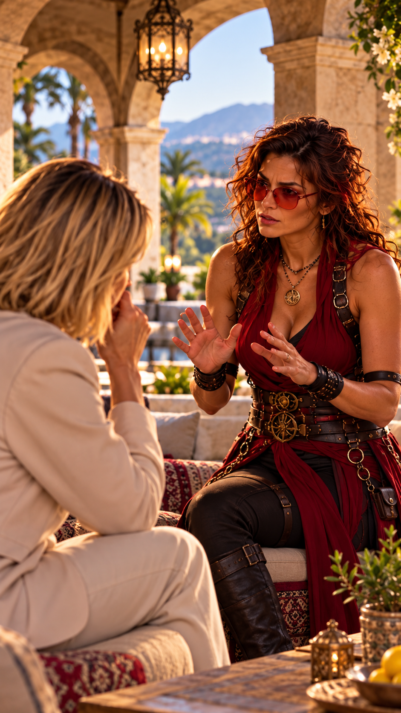
— Vous comptez lui tenir tête ?
— Je compte simplement refuser de lui appartenir.
Betty secoue la tête.
— Élie Santalucibel détruit ce qui lui résiste.
Votre frère vient précisément d’en mourir.
Betty regarde Anna.
— Je refuse que ma fille se retrouve impliquée là-dedans.
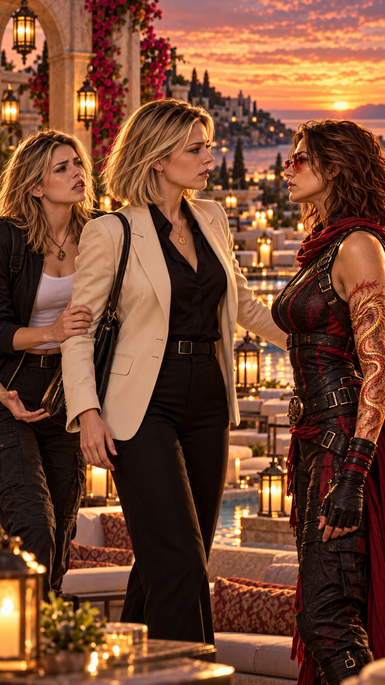
— Man…
— Non.
Betty se lève.
— Tu dis au revoir à Hope. Nous rentrons.
Hope reste assise.
— Betty.
— Quoi ?
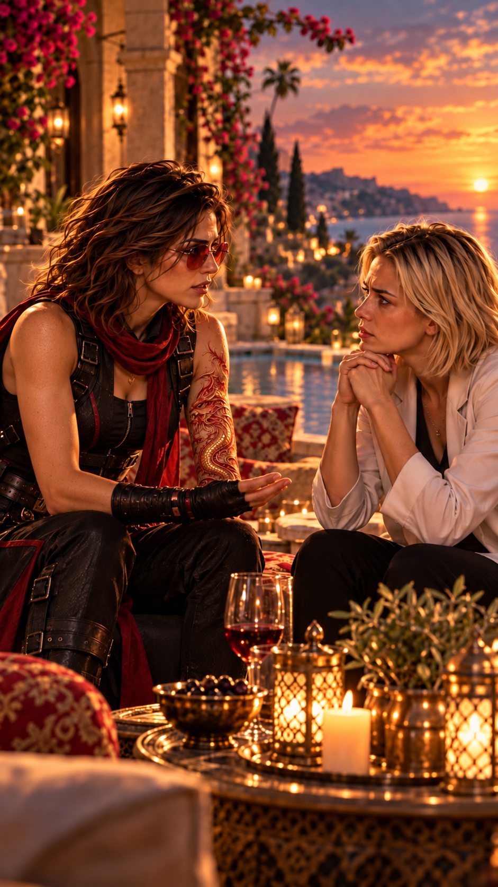
— Ce n’est pas le fait de me fréquenter qui met Anna en danger.
Betty se fige.
— La tentative d’enlèvement a eu lieu avant qu’Anna sache réellement qui j’étais.
Quelqu’un s’intéressait donc déjà à elle.
Cette fois, Betty écoute.
Hope regarde Anna.
— Tu veux lui montrer ?
Anna sourit immédiatement.
— Oui.
Hope se tourne vers Root.
— Doucement.
Root se lève.
Puis, sans prévenir, elle effectue un mouvement extrêmement rapide dans la direction d’Anna.
Betty reste bouche bée.
— Qu’est-ce que…
Anna regarde autour d’elle.
— C’est toujours aussi génial.
Betty se tourne brutalement vers Hope.
— Qu’est-ce que vous avez fait à ma fille ?
— Rien d’irréversible.
— Ce n’est pas une réponse !
— C’est un dispositif de protection.
Anna touche légèrement sa tempe gauche.
La protection disparaît.
Puis elle recommence.
Elle réapparaît.
— C’est génial, Man.
Betty la regarde sévèrement.
— Tu n’es pas invincible.
Hope acquiesce immédiatement.
— Sur ce point, nous sommes parfaitement d’accord.
Cette protection peut arrêter beaucoup de choses.
Pas toutes.
Hope ajoute :
— J’ai également équipé Anna d’un système de communication.
Betty soupire.
— Évidemment.
— Un bio-téléphone holographique.
Cette fois, Betty se fige.
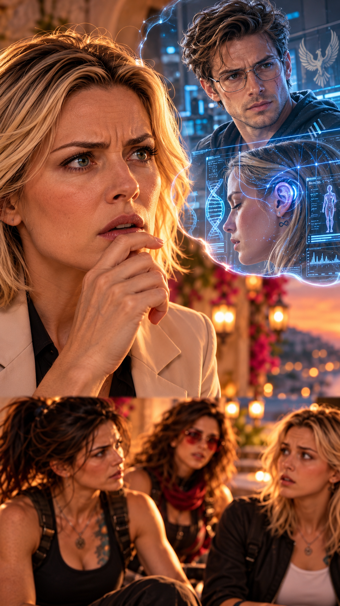
— Comment connaissez-vous cette technologie ?
Ce projet est confidentiel.
Extrêmement confidentiel.
Hope garde son calme.
Betty comprend soudain.
Peter.
— Peter Evanos.
Un drone s’approche soudainement.
Hope tourne la tête.
Le dispositif s’immobilise devant elle.
— Excusez-moi une seconde.
Hope échange quelques mots avec le drone, puis effectue un geste de la main.
Presque immédiatement, trois autres appareils apparaissent au-dessus de l’hacienda.
Les quatre drones repartent aussitôt dans des directions différentes.
Root observe Hope.
Une interrogation silencieuse passe entre elles.
Hope lui adresse un léger signe de tête.
Tout va bien.
Betty revient immédiatement au sujet.
— Au bio-holophone.
Hope lui explique que Peter a développé une nouvelle génération capable de se calibrer presque seule.
— Voulez-vous essayer ?
— Sur moi ?
— Je peux remplacer votre ancienne version.
— Alors faites.
Hope travaille rapidement derrière son oreille.
Betty serre légèrement les mâchoires mais ne bouge pas.
Quelques secondes plus tard, Hope recule.
— Terminé.
Betty la regarde, presque vexée.
— Déjà ?
— Essayez.
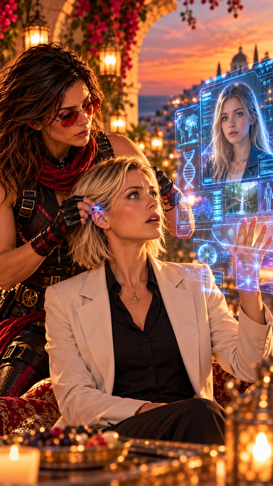
Betty porte son index à son oreille gauche.
Son petit doigt touche sa paume.
Puis sa main s’ouvre.
Anna apparaît.
Parfaitement nette.
La qualité de transmission est supérieure. Le délai presque inexistant.
Betty referme brusquement sa main.
L’hologramme disparaît.
Elle regarde Hope.
— Peter.
Hope retient difficilement son sourire.
— Peter.
— Je vais le tuer.
Root éclate de rire.
Anna également.
Betty se rapproche de Hope.
— Maintenant, vous avez toute mon attention.
Et ma curiosité vient officiellement d’atteindre un niveau dangereux.
Hope sourit.
— Peut-être pourrions-nous devenir collaboratrices un jour.
Et qui sait ? Peut-être même amies.
Betty sourit légèrement.
— Vous allez vite.
Hope reste silencieuse quelques secondes.
Puis elle commence.
— Mon nom de naissance n’est pas Hope Awake.
Hope Lynattendu.
Awake est le nom de la famille qui a recueilli puis adopté mon frère Ted après la disparition de notre famille.
Officiellement, je suis morte.
Plus précisément, portée disparue et présumée morte.
Hope avait douze ans.
L’appareil s’était écrasé dans une région isolée de Zhangjiajie.
Lorsqu’elle s’était réveillée, sa vie d’avant avait disparu.
Ses parents étaient morts.
Blessée, désorientée, seule au milieu d’une région inconnue, Hope avait survécu.
Mais son ancienne vie, elle, n’existait plus.
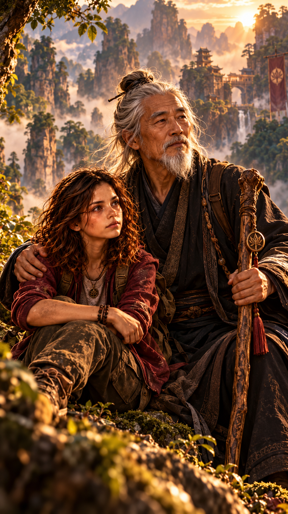
Hope fut recueillie et soignée par une communauté vivant loin des routes et du monde moderne.
Maître Lee prit soin d’elle.
Puis il l’éduqua.
Et l’entraîna.
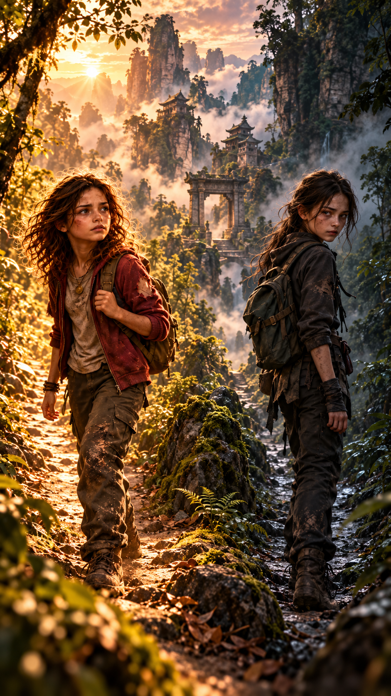
— Une autre enfant avait survécu.
Elle avait sensiblement mon âge.
Nous avons été retrouvées séparément.
Et nos vies ont pris deux directions totalement opposées.
Anna demande doucement :
— Amy ?
Hope la regarde.
— Oui.
— J’ai grandi auprès des Lumsenti.
Dans leur langue, ce nom renvoie à l’idée de ceux qui veillent dans la lumière.
— Et Amy ?
Hope hésite.
— Elle a été recueillie ailleurs.
Par ceux que nous appelons aujourd’hui les Gardiens Noirs.
Hope passa une grande partie de sa vie loin du monde connu.
À vingt-quatre ans, elle acheva les épreuves permettant d’accéder au rang le plus élevé de l’enseignement des Sentinelles.
Root intervient :
— Maître Unique.
Lucy comprend.
— C’est pour cela que vous n’existez pratiquement pas dans les bases de données.
Hope la regarde.
— Tu avais déjà trouvé le crash.
— Oui.
— Et la fillette disparue ?
— Oui.
Hope acquiesce.
— Alors maintenant tu sais pourquoi.
Hope poursuit :
— Je n’avais pas encore vingt-quatre ans lorsque j’ai rencontré Root, Peter et Max.
Root intervient aussitôt :
— Nous étions jeunes.
Et particulièrement idiots.
Hope rit.
— Je voulais rester polie.
Root et Max étaient partis ensemble en Chine.
Max voulait comprendre certaines communautés vivant en marge du monde moderne.
Root, elle, cherchait quelque chose de beaucoup moins raisonnable.
Une légende.
Les trois étudiants partirent explorer une région isolée.
Puis se perdirent.
Et tombèrent dans un gouffre.
Les autorités finirent même par les croire morts.

Hope les retrouva.
Elle les soigna.
Elle leur apprit à survivre.
Et surtout, elle les ramena vers un endroit où les secours pourraient les retrouver.
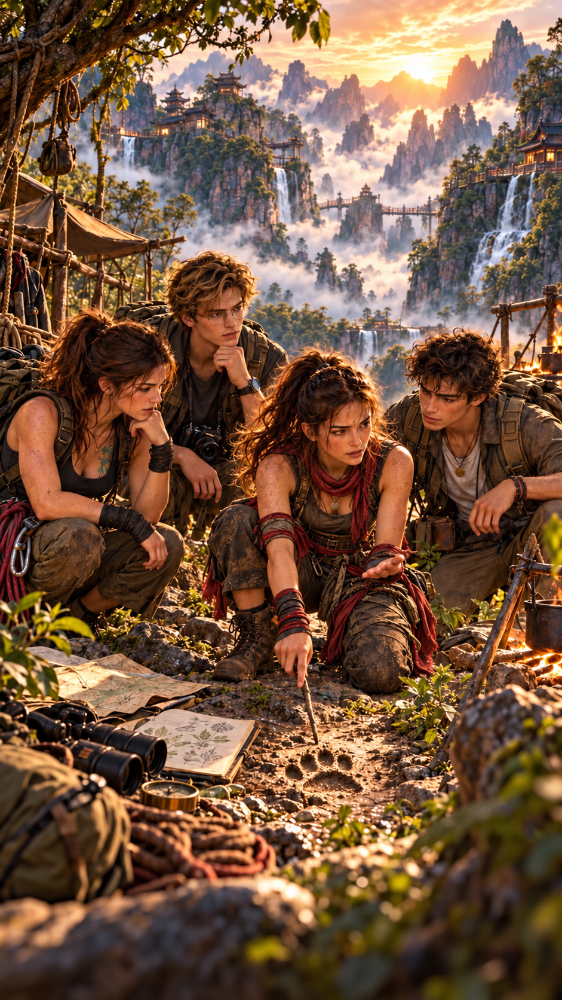
Root devient plus sérieuse.
— Douze jours.
Douze jours qui ont changé toute notre vie.
Hope nous a appris à survivre.
À observer réellement ce qui nous entourait.
Et surtout, à réfléchir à ce que nous voulions faire de nos vies.
Elle ne nous a jamais dit quoi devenir.
Elle nous a appris à comprendre pourquoi nous voulions devenir quelque chose.
Lucy demande :
— Mais pourquoi étiez-vous là-bas au départ ?
Root cherchait quelque chose.
Lorsqu’elle était enfant, elle avait découvert une pierre portant plusieurs symboles inconnus.
Pendant des années, elle avait essayé de comprendre ce qu’ils signifiaient.
Les inscriptions évoquaient une ancienne légende.
Une source.
Peut-être la Source de Vie.
Et surtout, elles indiquaient l’existence d’un objet ancien.
Une fiole.
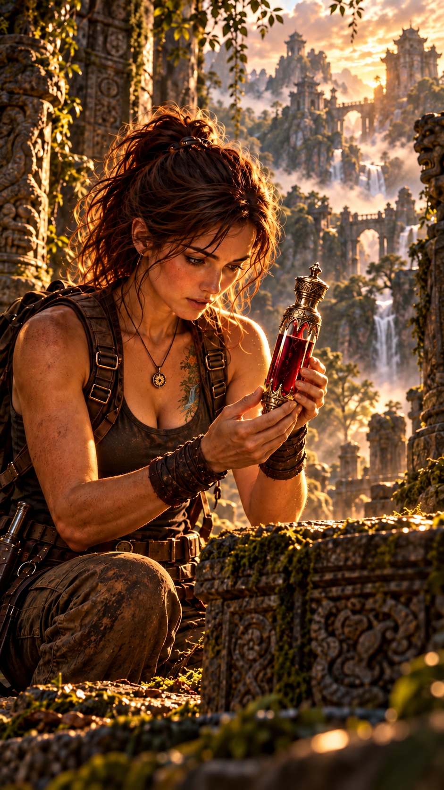
Root finit par retrouver la fiole.
Un objet ancien.
Mystérieux.
Impossible à dater correctement.
Et contenant un sang dont personne ne connaissait l’origine.
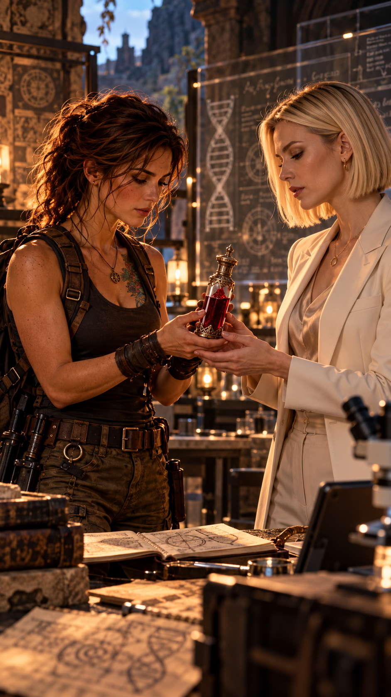
Root conserva la fiole plusieurs années.
Jusqu’au jour où elle rencontra quelqu’un dont les compétences scientifiques pouvaient enfin l’aider.
Betty.
Root lui avait confié l’objet.
Avec une seule demande :
comprendre ce qu’il contenait.
Hope regarde Root.
Puis Betty.
Et elle comprend quelque chose à l’expression de la généticienne.
Root demande doucement :
— Betty ?
Anna tourne la tête vers sa mère.
Betty relève lentement les yeux.
Elle vient de comprendre.
Elles parlent de la fiole.
De sa fiole.
Celle dont elle n’a jamais révélé ce qu’elle avait réellement fait.
Betty demande :
— Comment avez-vous su que vous pouviez leur faire confiance à tous les trois ?
Hope répond :
— J’ai vérifié.
Root comprend.
Elle remonte lentement sa manche.
Un cercle apparaît, presque parfaitement intégré à sa peau.
De fins symboles semblent surgir des profondeurs de la chair.
Au centre, une ligne lumineuse multicolore.
Betty se rapproche.
— C’est un tatouage ?
— Non, répond Root.
Hope poursuit :
— Cette marque ne se dessine pas.
Elle se révèle.
Pour les Sentinelles, son apparition signifie qu’une personne appartient à une histoire beaucoup plus ancienne qu’elle ne le sait elle-même.
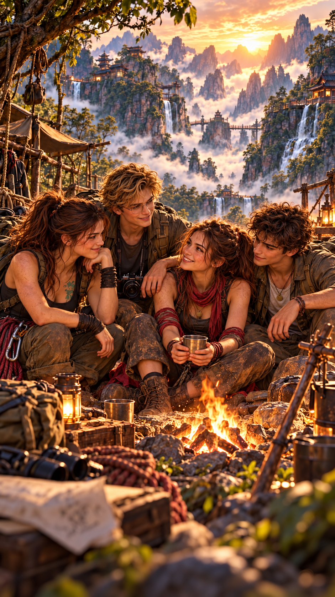
Root sourit.
— Depuis ce jour, Peter, Max et moi sommes devenus comme les doigts d’une même main.
Elle regarde Hope.
— Et elle en fait partie.
Nous avons choisi des vies différentes.
Nous vivons parfois à des milliers de kilomètres les uns des autres.
Nous pouvons rester longtemps sans nous voir.
Mais si l’un de nous appelle, les autres viennent.
Betty regarde l’heure.
— Il commence à se faire tard.
Anna proteste immédiatement.
— Man…
— Nous reviendrons samedi.
— Promis ?
— Promis.
Quelques minutes plus tard, Betty, Anna et Lucy quittent l’hacienda Awake.
Hope et Root restent seules.
Pendant près d’une heure, elles reparlent de cette étrange journée.
De Lucy.
De Betty.
Et surtout d’Anna.
Root regarde son amie.
— Elle t’intrigue.
Hope ne répond pas immédiatement.
— Beaucoup de choses m’intriguent.
Root sourit.
— Ce n’est pas ce que j’ai dit.
Un bruit lointain finit par attirer leur attention.
Puis trois drones apparaissent au-dessus de la propriété.
Hope les reconnaît immédiatement.
Elle sourit.
— Ils sont enfin là.
Root lève les yeux.
— Peter.
— Évidemment.
Quelques instants plus tard, un véhicule franchit les contrôles de l’hacienda.
À son bord :
Peter Evanos
Max Speedman
Root sourit.
Hope également.
Le cercle continuait à se refermer.